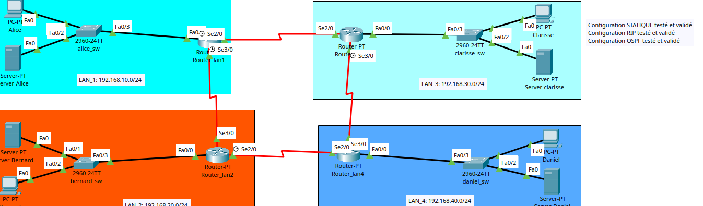
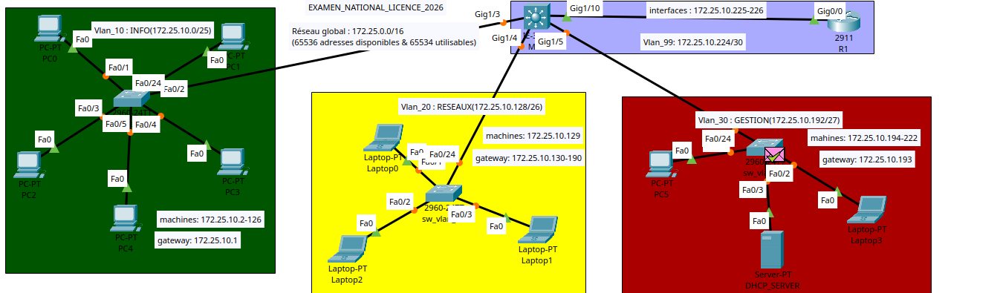
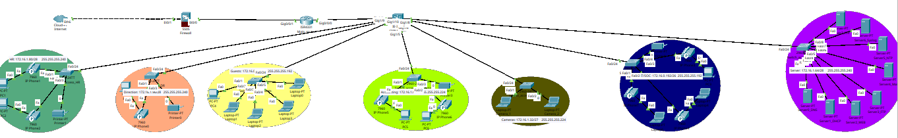

Networking · network security
Enterprise network labs: from VLANs to a secured multi-site design
Six labs that took me from my first VLAN to a complete multi-site network: an addressing plan built around real needs, a security policy turned into ACLs, and layer-2 protections. The screenshots are my own project files, with the notes I left when each test passed.
- Period
- July – September 2026
- Status
- Completed · lab work on my own, during my internship
- Type
- Personal project
The project
After the networking lessons of my internship, I practiced on my own in Cisco Packet Tracer, in the order a network engineer works: interconnect, segment, route, filter. At each step I built the network, tested it, then tried to justify my choices (subnet sizes, routing protocol, where to put the filters). The last lab is a personal capstone: a complete multi-site network designed from business needs.
- Labs 1–2: five VLANs (HR, Accounting, IT, Management, management VLAN 99) routed with Router-on-a-Stick over an 802.1Q trunk; then an extended ACL preventing the Sales VLAN from reaching Admin, and port security limiting each access port to one MAC address.
- Lab 3: four remote sites in a serial loop, routed successively with static routes, RIPv2 and single-area OSPF.
- Lab 4: VLSM split of 172.25.0.0/16 across three VLANs of different sizes, with inter-VLAN routing on a multilayer switch (SVIs) and DHCP.
- Lab 5: a /24 redesigned with VLSM, three application servers, a security policy written as extended ACLs applied close to the source, unused ports shut, DHCP snooping and dynamic ARP inspection.
- Lab 6: headquarters with eight segments (voice, guests, IT/SOC, accounting, cameras, servers, HR, management), a core multilayer switch with DHCP relay, pruned trunks, a voice VLAN on shared ports, and two branches over serial WAN links with OSPF.
What I did, and what went wrong
- Before drawing anything, I start from questions: how many departments, how many devices in each, what growth over the next two years, what budget. The answers decide the subnet sizes.
- I write the security policy as a simple table first (who, towards what, which service, allowed or not), then translate each line into an ACL. A manager never asks for an ACL; they ask that accountants should not see HR files.
- Configured every device from the IOS command line and kept the configurations.
- Sized lab 6 from estimated equipment counts: 196 devices plus about 50 % growth, around 368 addresses. A /24 (254 usable) was too small, a /23 (510) left no real margin, a /22 (1,022) fit with room to grow.
- Wrote lab 5's policy as one ACL per source, for example: the Users VLAN may reach the DNS/web server on TCP 80, TCP 443 and UDP 53 only.
- Alongside the six labs: a services lab with five dedicated servers (DHCP, DNS, web, FTP, mail), each configured and tested from the client machines, with a troubleshooting section for each service.
What went wrong
- My first lab 5 plan cut the /24 into four equal /26 blocks. When two departments had to be added without interrupting the network, it no longer fit. I redid the plan with VLSM: two /27 user VLANs, a /26 for servers, a /27 for IT and a /30 for the router link.
- Keeping layer 2 and layer 3 apart in my head: an ACL filters on IP addresses, port security on MAC addresses. They answer different threats and are not interchangeable.
How I checked it
What I wanted to prove, the test I ran, and what I actually saw.
| What I wanted to prove | The test | What I saw |
|---|---|---|
| Sales cannot reach Admin; one MAC per port | Connectivity tests in the lab file | Annotation left at test time: « Tout est OK ! Commercial ne peut pas communiquer avec admin » |
| Four sites reachable with each routing method | Inter-site tests after static, then RIPv2, then OSPF | All three validated in turn (annotated in the project file) |
| Multi-site design works end to end | Inter-segment and HQ → branch tests; voice VLAN on a shared port | Eight segments communicate through the core; both branches reachable; voice VLAN operational |




Result
- Six working topologies with their configurations, and an addressing plan where every subnet size is argued.
- A concrete feel for routing trade-offs: static routing becomes heavy as networks multiply, RIP is simple but limited, OSPF is closest to a real enterprise network.
Limits and next steps
- Simulation only (Packet Tracer), no physical equipment.
- The raw outputs of the verification commands were not kept at the time. Results come from annotations in the project files and from screenshots of the active topologies, as the repository states.
- All addresses are private simulation ranges with no link to a real infrastructure.
What I would do next
- Keep the show command outputs as evidence for every future lab
- Add IPv6 and centralized logging (syslog) to the multi-site design
- Rebuild part of it on real or emulated IOS
Code and documents
- Repository: configurations of the six labs github.com/AGRO-Rachidi/cisco-networking-labs